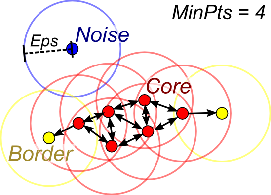
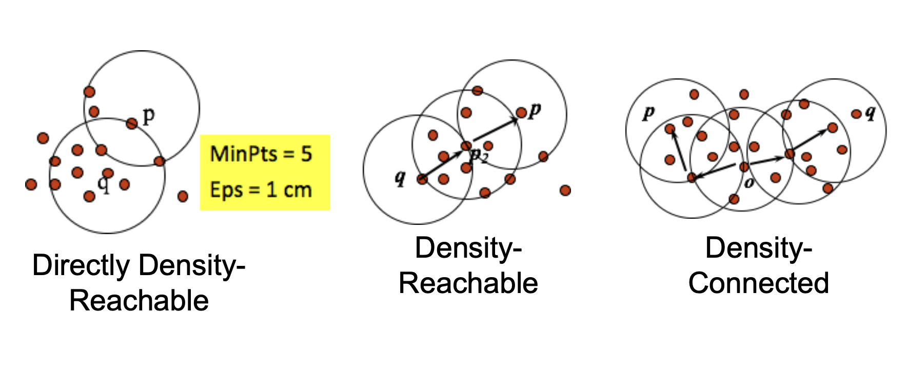
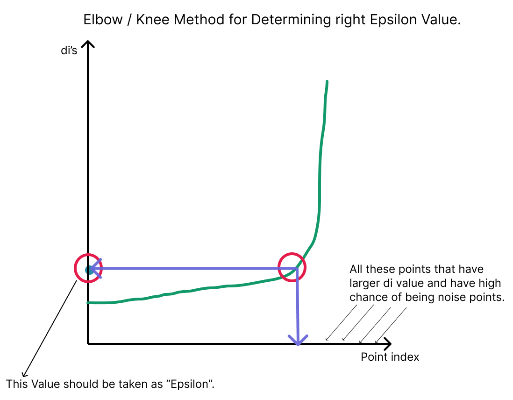
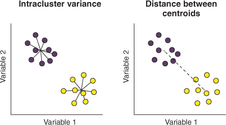
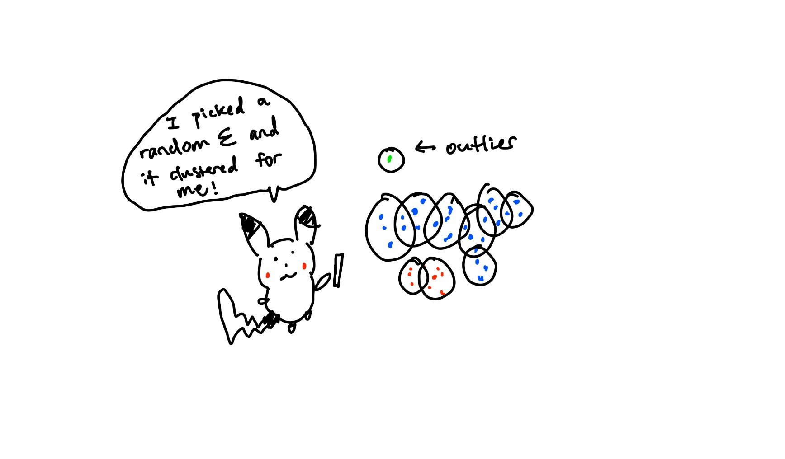

Last time, Pikachu was building a Pokemon type classifier based on type colors. However, coming up with the right K value takes too long and for all Pikachu knows, there could be lots of undiscovered types. Could we go by without it? Yes! Introducting density based clusering DB Scan.
All other clustering methods require knowing or trying to optimize how many clusters we need. However, DB Scan, or Density Based Spatial Clustering of Applications with Noise avoids that all together (what a mouthful). The idea is simple: a cluster contains a maximal set of density connected points. This is another hard clustering algorithm falling under unsupervised learning.
A core point is a point with more than the min points $\phi$ within its $\varepsilon$ neighborhood
A border point is a point with fewer than the min points $\phi$ but within $\varepsilon$ neighborhood of a core point
A noise point is an outlier. It is not a core point nor a border point.

So how do we get started? Start with a single point:
Let $q$ be a core point and $p$ be within its $\varepsilon$ neighborhood. We can use fellow points inside the neighborhood and keep expanding.
We will now build a chain or a path of epsilon neighborhoods built around core points. Core points will be chained to neighboring core points.
This is not symmetric! $p \rightarrow q \neq q \rightarrow p$
Now we've created this chain. We can say for sure that points ($p, q$) belong as a member of a group if it is reachable from $o$. In other words, if both $p, q$ can be reached from source $o$, they belong in the same cluster.
This is symmetrical: $p \rightarrow q = q \rightarrow p$

We know that DB Scan has 2 hyperparameters, $\varepsilon$ and $\phi$. A $\varepsilon$ value that is too small means we will over cluster since we will basically create tiny islands that don't chain. A $\varepsilon$ value that is too large means we will under cluster since our island chains get too big and we can't diffrentiate between the neighborhoods. We can find the optimal value of $\epsilon$ using the elbow method mentioned in KNN. A heuristic (rule of thumb) for $\phi$ is: $\phi \ge 3$.

How do we know if our DB Scan result is good? One way is to use the Davies-Bouldin Index (DBI). First, we define a mean: $$ \mu_i = \frac{1}{n_i} \sum_{x_j \in C_i} X_j $$ The variance is then: $$ \sigma_{\mu_i} = \sqrt \frac{\sum_{x_j \in C_i} \delta (X_j, \mu_i) ^ 2}{n_i} = \sqrt{var(C_i)} $$ where $\delta$ is a distance function. The DB measure is defined as: $$ DB_{ij} = \frac{\sigma_mu_i + \sigma_mu_j}{\delta(mu_i, mu_j)} = \frac{\text{spread}}{\text{distance between centers}} = \frac{\text{intracluster dist}}{\text{intercluster dist}} $$ This represents "badness" or the compactness of the clusters compared to the distance between the means. The numerator is the spread (intracluster distance), and denominator is the distance (intercluster distance). Large $DB_{ij}$ is bad, meaning distance between clusters are close or the cluster is spread out. Small $DB_{ij}$ is good, meaning clusters are far or the cluster is tight. Let: $$ D_i = \max_{i \neq j} DB_{ij} $$ represent the largest pariwise "badness". In other words: for this cluster, which other cluster makes it look the worst? The final DB Index is the mean of the worse badness scores ($DB_{ij}$): $$ DB = \frac{1}{k} \sum^k_{i = 1}D_i $$ where a lower value DB is better.

$$ \begin{aligned} &\text{DBSCAN}(X,\epsilon,\text{MinPts})\\ &C = 0\\ &\text{for each unvisited point } P \text{ in dataset } X:\\ &\qquad \text{mark } P \text{ as visited}\\ &\qquad \text{NeighborPts} = \text{regionQuery}(P,\epsilon)\\ &\qquad \text{if } |\text{NeighborPts}| \le \text{MinPts}:\\ &\qquad\qquad \text{mark } P \text{ as NOISE}\\ &\qquad \text{else}:\\ &\qquad\qquad \text{expandCluster}(P,\text{NeighborPts},C,\epsilon,\text{MinPts})\\ &\qquad\qquad C = C + 1\\[6pt] &\text{expandCluster}(P,\text{NeighborPts},C,\epsilon,\text{MinPts})\\ &\qquad \text{add } P \text{ to cluster } C\\ &\qquad \text{for each point } P' \text{ in NeighborPts}:\\ &\qquad\qquad \text{if } P' \text{ is not visited}:\\ &\qquad\qquad\qquad \text{mark } P' \text{ as visited}\\ &\qquad\qquad\qquad \text{NeighborPts}' = \text{regionQuery}(P',\epsilon)\\ &\qquad\qquad\qquad \text{if } |\text{NeighborPts}'| \ge \text{MinPts}:\\ &\qquad\qquad\qquad\qquad \text{NeighborPts} = \text{NeighborPts} \cup \text{NeighborPts}'\\ &\qquad\qquad \text{if } P' \text{ is not yet member of any cluster}:\\ &\qquad\qquad\qquad \text{add } P' \text{ to cluster } C\\[6pt] &\text{regionQuery}(P,\epsilon)\text{ returns all points within }P\text{'s }\epsilon\text{-neighborhood (including }P\text{)} \end{aligned} $$
So what should Pikachu do if he is too lazy to find the K value? Use DB-scan! This way, instead of deciding how many clusters exist, he decides how he wants to group the data points into clusters. This is actually way easier than finding the number of clusters that should exist. The clusters is thus implicitly chosen by the dataset. However, optimizing for $\varepsilon$ is another game of hyperparameter tuning. The gif at the very top shows DB scan in action. It's just connecting the dots.
